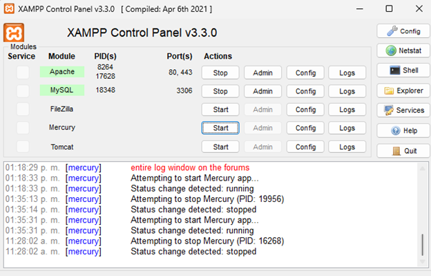

Práctica 4 - Virtualización
Práctica de Virtualización
En esta práctica se realizó la configuración y uso de un entorno de virtualización, siguiendo las instrucciones del Cuaderno de Ejercicios. A continuación, se muestra una captura de pantalla del proceso o resultado de la virtualización:
